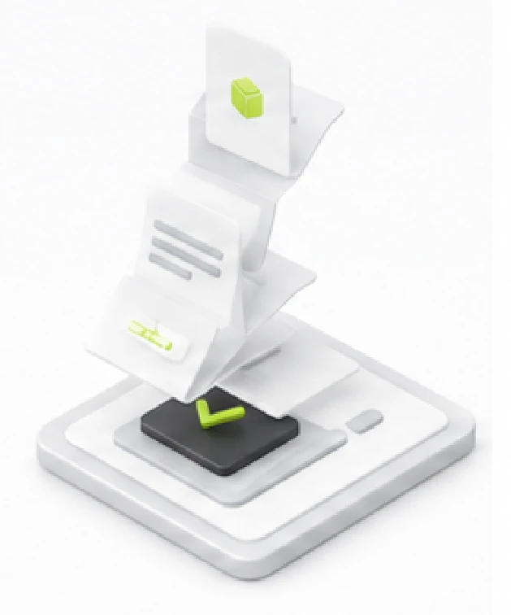

Vazifalar va tasdiqlar
Tasdiqlash jarayonlarini ko'rib chiqing va vazifalaringizni boshqaring.
Tasdiqlash navbati5
Xarid so'rovnomasi
Jarayonda
Izoh
Moliyaviy limit doirasida. Tasdiqlash uchun yuborildi.
